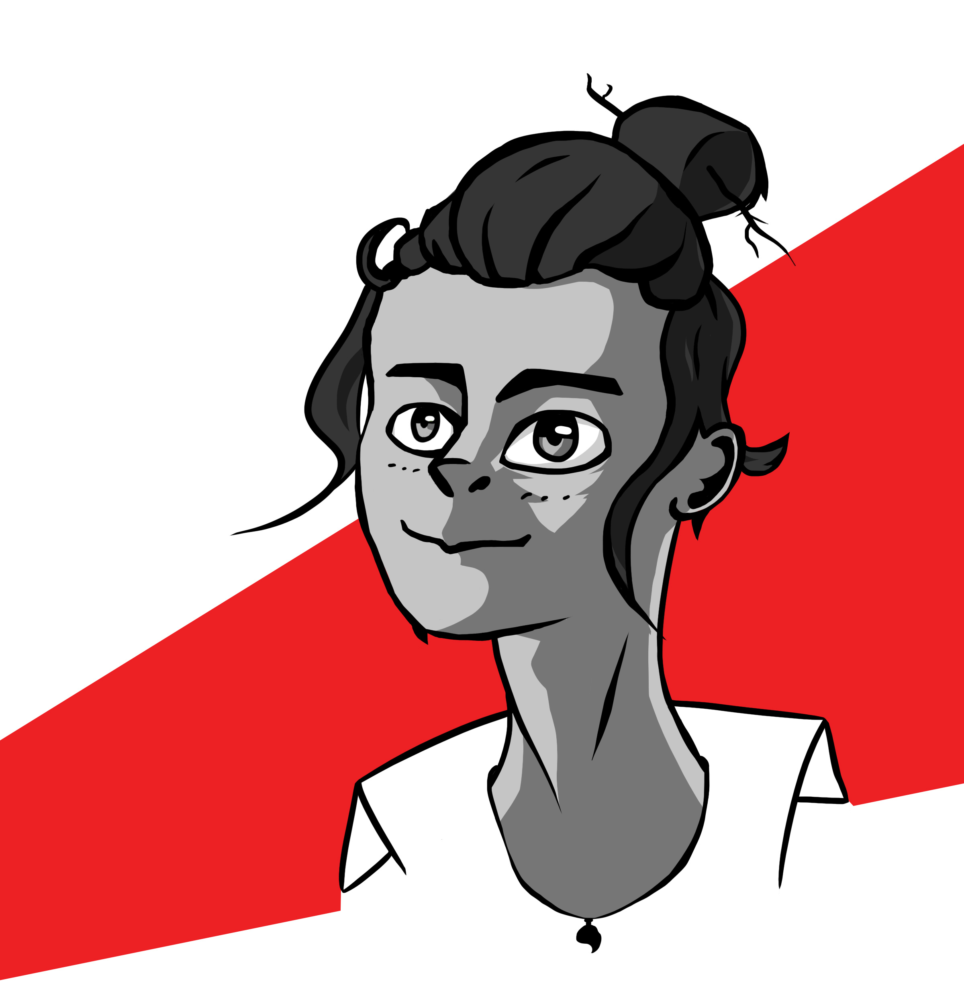
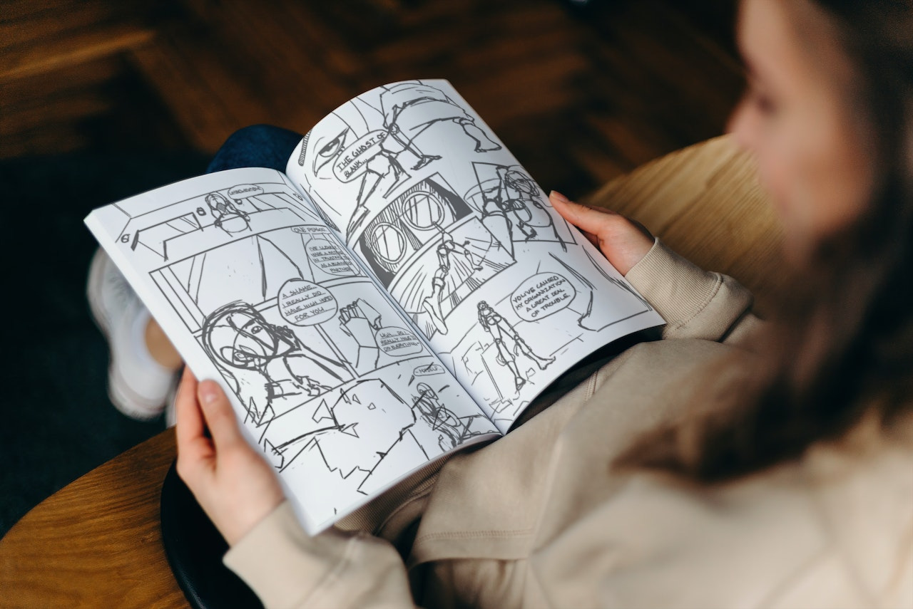

About the Author
Hi, I’m Vincent. I’m a full-time graphic design student with a passion in illustration and art. I’ve always loved and obsessed over great storytelling in movies, shows, books, etc. So, a passion project like Replacing Jane has always been a long-time coming. With many other stories and characters I’ve been dying to dive into, I’m very excited to make my debut as a graphic novelist.
More on the Book
Replacing Jane is the dark and melancholic character-driven origin story author Vincenzo has always wanted to read. The concept was first thought-up on a whim in a drawing challenge. After having been left to collect dust in the old sketchbook, it wasn’t until a few years later that the idea was revisited. Then, research was conducted, character sheets were filled out, and a first draft for the script was made. Now on the 5th revision of the script, the story is very different compared to its first iteration. Rough sketches and storyboards are also currently in the works.
Specs
Standard
- Hard-Cover:
- No;
- Binding:
- Saddle-stitching;
- Pages:
- 67;
- Size:
- 5 in x 7.5 in;
- Materials:
- Sustainably sourced; recyclable.
Deluxe
- Hard-Cover:
- Yes;
- Binding:
- Case-bound;
- Pages:
- 96;
- Size:
- 6 in x 9 in;
- Materials:
- Sustainably sourced; recyclable.